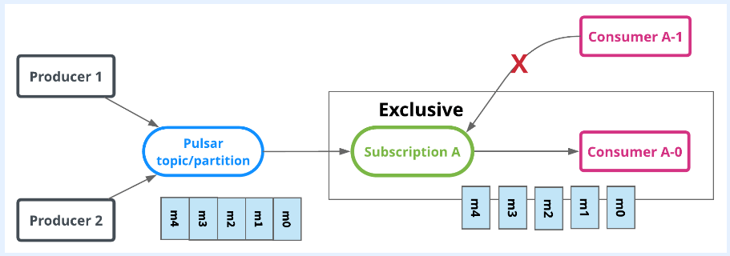
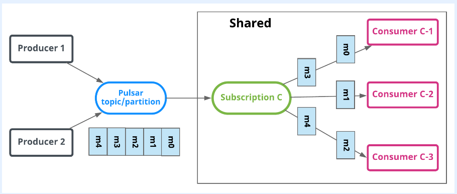
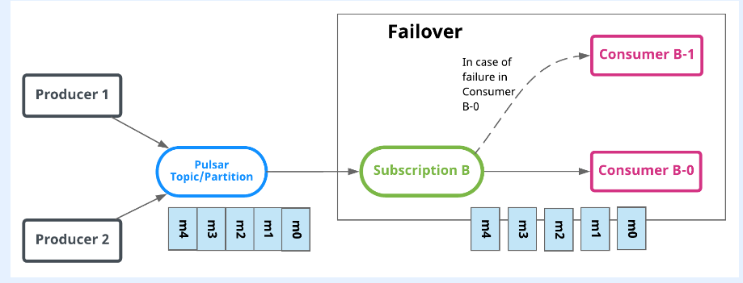
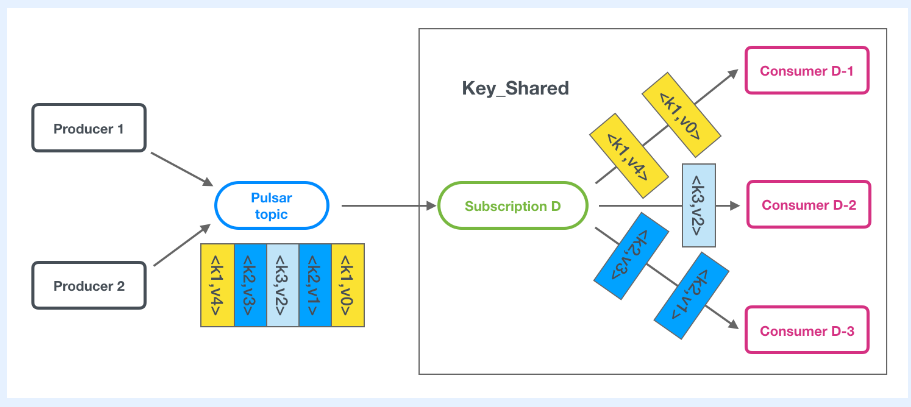

Pulsar术语
Pulsar
Pulsar是一个分布式消息系统，一开始由Yahoo创建，现在由Apache Software Foundation管理。
Message
Pulsar的基本单元，由生产者发送到topic,由该topic下的消费者消费。
Topic
生产者和消费者传输消息的媒介。
Partitioned Topic
一个topic由多个Pulsar broker提供服务，可以提高吞吐量。
Namespace
一组相关topics拥有相同的namespace。
Namespace Bundle
同一个topic下的一组虚拟topics。被定义为一个32bit hash值的范围，比如0x00000000到0xffffffff。
Tenant
一个分配容量和执行认证、授权方案的管理单元。
Subscription
由一组消费者建立的关于某一topic的订阅。消费者有四种订阅模式：
exclusive：只能有一个consumer对topic进行订阅。 shared：可以有多个consumer对topic进行订阅。 failover: 可以多个consumer对topic进行订阅。当主consumer断开连接了，可以由其他consumer来处理那些unacked类型的消息。 key_shared: 可以有多个consumer对topic进行订阅。消息是跨消费者进行传递，有相同key的消息会被发送给同一个消费者。 
Pub-sub
生产者发送消息给某个topic,订阅这个topic的消费者取该topic上的消息进行消费的消息模式。publication-subscription的缩写。
Producer
发送消息给topic的进程。
Consumer
订阅某个topic,然后处理该topic上的消息的进程。
Reader
类似于consumer,但是有以下两个关键区别：
- 可以指定从
topic的哪个位置开始处理消息，而consumer是从最早发来的unacked消息开始处理 reader不需要保留数据，也不需要对消息进行确认，consumer处理完消息后是需要向broker发送确认消息的。
Cursor
consumer的订阅位置。可参见我的文章：Pulsar消息保留与过期策略中的图片。
Acknowledgment (ack)
由consumer发送给broker的消息，作用是告诉broker:我从你这里拿的消息已经处理完了。
Negative Acknowledgment (nack)
消费没有被消费者正常处理，会发送给broker一个“negative ack”，告知一段时间后再发送一遍。对于有序订阅类型(Exclusive、Failover、Key_Shared)，会造成消息乱序。
Unacknowledged
表示这样一种状态： 消息已经被发送给consumer，但是consumer没有发送给broker ack。
Retention Policy
消息保留策略。当消息处于ack状态可以在Pulsar集群中的保留策略，有size和time两种策略。size策略表示超过limit数量的ack类型的消息就不再保留，time策略表示超过limit时间的ack类型的消息就不再保留。在namespace中进行配置。消息是如何保留的可参见文章：Pulsar消息保留与过期策略。
Multi-Tenancy
描述基于每一个tenant来隔离namespace、配额、配置认证/鉴权的一种能力。
Failure Domain
一个Pulsar集群下的逻辑域。每一个逻辑域包含一组预先配置的brokers列表。
Anti-affinity Namespaces
一组相互排斥的namespaces。
Standalone
一个轻量级的Pulsar broker，该broker的所有组件运行在一个单一的Java虚拟机进程里。单机版的集群可以运行在单一物理机器上，便于用于开发阶段。
Cluster
一组Pulsar brokers和BookKeeper服务程序的集合。集群可以驻留在不同的地理区域，通过geo-replication的方式，集群之间可以互相复制消息。
Instance
一组Pulsar clusters组成的集合，对外称作一个Pulsar实例。
Geo-Replication
跨集群间的消息复制，可以是不同的数据中心或者是不同的地理区域。
Configuration Store
我将其翻译为配置仓库。本质上是一个ZooKeeper,用来做整个集群的配置。一个由多集群组成的Pulsar实例需要一个配置仓库来存储集群们所公用的配置。参见ZookKeeper在Pulsar的作用可参见我的文章：Pulsar架构概览。
Topic Lookup
由Pulsar broker提供的一种服务：能够使得正在连接的客户端决定某个topic上的消息传送由哪个pulsar集群负责。
Service Discovery
一种机制：客户端仅仅只需要一个URL就能和一个集群中的所有的brokers进行通信。
Broker
一个Pulsar集群中的一个无状态组件。主要由两种类型的组件组成：
- HTTP 服务：
- 为管理组件暴露REST接口
topic lookup
- dispatcher: 负责消息的路由
- 从
producer接收消息 - 发送消息给
consumer
- 从
Dispatcher
一个异步的TCP服务，负责消息的路由。
BookKeeper
一个Apache的开源组件，用作消息的持久化存储。
Bookie
一个BookKeeper服务实例叫做一个Bookie。
Ledger
BookKeeper中的一种数据结构，该结构只能够添加数据。用来进行发往某topic的消息的存储。
comments powered by Disqus